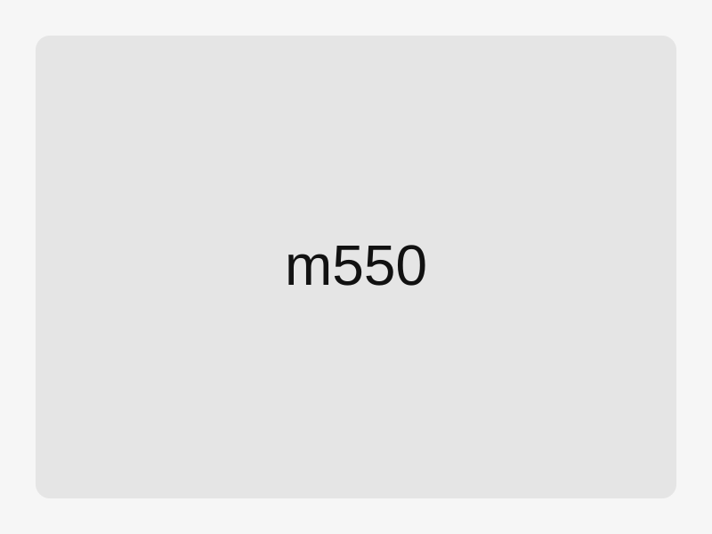

Solarleuchte Typ M550
Kompakte, autarke Spezialleuchte für maritime Markierungen mit hoher Sichtbarkeit und geringem Wartungsaufwand.

Technische Daten
| Lichtquelle | LED |
|---|---|
| Versorgung | Solarpanel / Akku |
| Schutzart | IP67 |
| Betriebstemperatur | -30°C bis +55°C |
Schlüsselfakten
- Unterhaltsfrei im Regelbetrieb
- Korrosionsbeständiges Gehäuse
- Optional mit Fernüberwachung
Tags: Seezeichen, Solar, LED